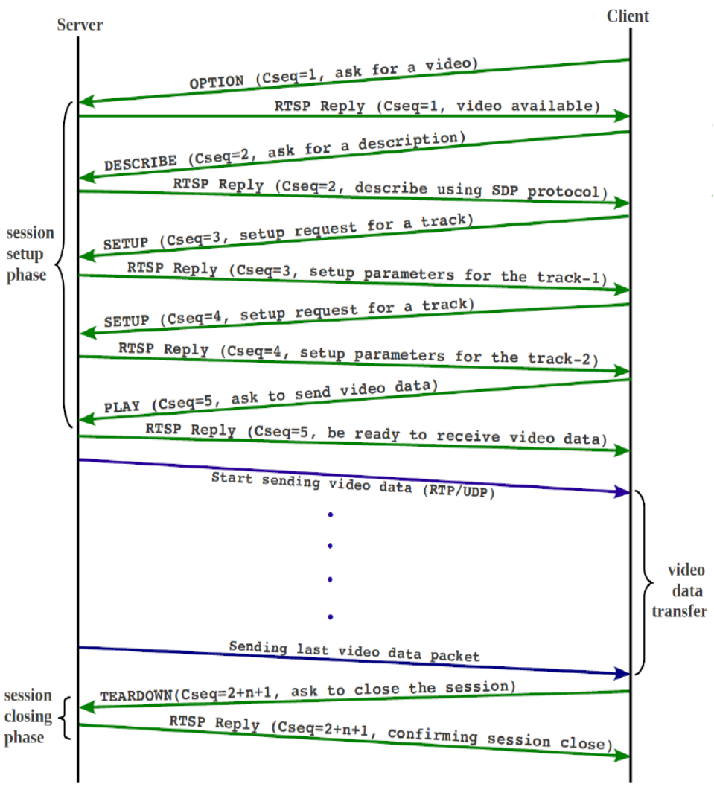

O "controle remoto" do streaming de mídia
Grupo 5: João Pedro Peçanha Cotrim, Marco Antonio Tronco Felix, Pedro Ivo Lopes Pinheiro
O RTSP (Real Time Streaming Protocol) é um protocolo de nível de aplicação projetado para controlar a entrega de dados com propriedades de tempo real. Ao contrário do que muitos pensam, o RTSP não transmite os dados de mídia em si, mas atua como um "controle remoto" para o servidor de mídia.
Sua necessidade surgiu da demanda por interatividade em transmissões online, permitindo que o usuário controle o fluxo (reproduzir, pausar, parar) de forma eficiente, contextualizando-se em sistemas de vigilância, videoconferências e entretenimento.
O RTSP foi proposto originalmente pela RealNetworks, Netscape e Universidade de Columbia em 1996, culminando na RFC 2326 em 1998.
Comparação com protocolos da época:
O RTSP é um protocolo "stateful", o que significa que o servidor mantém o rastro do estado do cliente através de uma ID de sessão, diferente do HTTP que é um protocolo sem estado:
Diferenças Técnicas:
| HTTP | Propriedade | RTSP |
|---|---|---|
| Stateless: Cada req. independente | Estado | Stateful: Servidor mantém sessão |
| In-band: Dados no mesmo canal | Dados | Out-of-band: Mídia via RTP separado |
| Unidirecional: Somente cliente → servidor | Direção | Bidirecional: Servidor tb. envia reqs |
| Transferência de documentos: HTML, JSON, arquivos | Propósito | Controle de streaming: Play, pause, seek, record |
O RTSP trabalha em conjunto com:
O RTSP opera na Camada de Aplicação do modelo OSI. Ele funciona de forma independente do protocolo de transporte (pode usar TCP ou UDP para suas mensagens de controle, embora TCP seja o padrão para garantir a entrega dos comandos).
O fluxo funciona assim: as mensagens de controle RTSP viajam por uma porta (geralmente 554), enquanto o conteúdo da mídia (RTP) viaja por canais separados. Isso permite que o controle seja mantido mesmo se houver congestionamento nos dados de vídeo.

| # | Direção | Método / Resposta | Descrição do Evento |
|---|---|---|---|
| 1 | C → S | OPTIONS | Cliente pergunta quais métodos o servidor suporta. |
| 2 | S → C | 200 OK | Servidor responde: "Suporto OPTIONS, DESCRIBE, SETUP, PLAY". |
| 3 | C → S | DESCRIBE | Cliente solicita detalhes sobre a mídia (codecs, faixas). |
| 4 | S → C | 200 OK (SDP) | Servidor envia o arquivo de descrição da sessão. |
| 5 | C → S | SETUP | Cliente escolhe a faixa e informa as portas de recepção. |
| 6 | S → C | 200 OK | Servidor confirma e envia o Session ID. |
| 7 | C → S | PLAY | Cliente ordena o início da transmissão dos dados. |
| - | Stream | Tráfego RTP | O servidor começa a enviar os pacotes de vídeo/áudio. |
| 8 | C → S | TEARDOWN | Cliente solicita o encerramento da sessão. |
| 9 | S → C | 200 OK | Servidor libera os recursos e fecha a conexão. |
| Cabeçalho | Categoria | Descrição | Exemplo Prático |
|---|---|---|---|
| CSeq | Obrigatório | Identificador da sequência de transação. Incrementado a cada novo pedido para emparelhar com a resposta. | CSeq: 2 |
| Session | Sessão | ID único gerado pelo servidor no comando SETUP. Essencial para manter o estado da conexão. | Session: 47112344 |
| Transport | Transporte | Define os protocolos de dados (RTP/RTCP), portas do cliente/servidor e tipo de transmissão (unicast). | Transport: RTP/AVP;unicast;5000-5001 |
| Content-Type | Entidade | Indica o formato do corpo da mensagem. Quase sempre usado com SDP em respostas DESCRIBE. | Content-Type: application/sdp |
| Public | Geral | Lista todos os métodos que o servidor suporta. Enviado tipicamente na resposta ao comando OPTIONS. | Public: PLAY, PAUSE, SETUP |
| Range | Reprodução | Define o ponto de início e fim da reprodução (em segundos ou tempo SMPTE). | Range: npt=0-30.5 |
| User-Agent | Solicitação | Identifica o software cliente que está a realizar o pedido. | User-Agent: VLC/3.0.16 |
As aplicações mais comuns incluem câmeras de segurança IP (CCTV), sistemas de entretenimento de hotéis e transmissões corporativas.
| Configuração de Transporte | Impacto na Latência | Segurança |
|---|---|---|
| UDP (RTP Puro) | Baixíssima latência, ideal para tempo real. | Vulnerável a perdas de pacotes. |
| TCP (Interleaved) | Latência maior devido a retransmissões. | Mais fácil de passar por Firewalls. |
| RTSPS (Over TLS) | Pequeno overhead de processamento. | Criptografia ponta a ponta. |
Atualmente, o RTSP enfrenta forte concorrência do HLS (HTTP Live Streaming) e DASH, pois estes últimos utilizam portas HTTP padrão (80/443), facilitando o atravessamento de firewalls e o uso de CDNs (Content Delivery Networks).
O futuro do RTSP: Ele está sendo substituído em transmissões de massa, mas continua sendo o padrão ouro para monitoramento de baixa latência e IoT. Versões modernas (RTSP 2.0) tentam resolver problemas de incompatibilidade de NAT e melhorar a segurança.
O protocolo RTSP foi fundamental para estabelecer a fundação do streaming moderno. Ele ensinou à indústria como separar o controle da transmissão e a importância da sincronização de fluxos. Sem ele, a evolução para protocolos mais robustos e baseados em web não teria a mesma base técnica sólida.
O RTSP é um codec de vídeo?
Não. O RTSP é um protocolo de controle. O vídeo em si é codificado por codecs como H.264 ou H.265 e transportado via RTP.
Por que meu navegador não abre links rtsp:// nativamente?
Navegadores modernos priorizam protocolos baseados em HTTP. Para RTSP, geralmente é necessário um plugin ou software como o VLC Media Player.